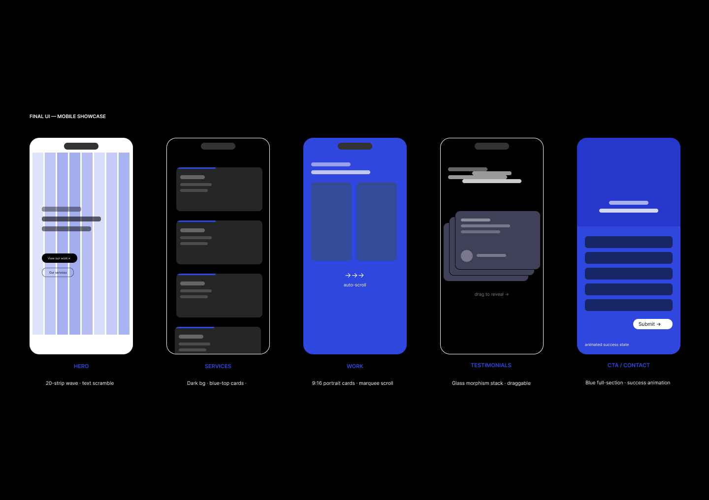

UK / US · STUDIOBEE.CO.IN
Case Study
Designing a brand-forward agency website that gives a feel of luxury, is trustworthy — and looks like the best agency in the room.
Role
Lead UI/UX Designer & AI Front-end
Year
2026
Deliverables
Brand system · UI design · Prototype · Front-end build
Overview
"The brief was simple: make it feel like the best agency in the room — and make sure it doesn't crash on an iPhone."
Project Brief — Studiobee, 2025Audience
Indian founders
& marketing leads
Mobile-first visitors comparing agencies — decisions made in 8 seconds, often mid-commute.
Goals
Premium positioning
through restraint
Showcase work first. Signal quality through type and motion, not decoration.
Design Constraints
Hard technical limits shaped
every decision
Mobile-first touch targets · No UI framework · Brand must feel premium, not templated · Work must be front-and-center
Design Process
01
Discover
Research
02
Define
Brand + IA
03
Design
Wireframes
04
Prototype
Build + Test
05
Iterate
Refine + Ship
Discovery & Brand System
Principle 01
Premium Restraint
Every element earns its place. Curated, not busy.
Principle 02
Motion With Purpose
Animation signals craft, not decoration — every moving element earns its budget.
Principle 03
Work First, Always
The portfolio is the product. Visitors reach the work within 3 scroll stops.
Colour Tokens
Typography — DM Sans, -0.04em tracking
Headlines.
User Research
Primary Persona
Rahul M. — Co-founder & Marketing Lead
Compares 3 agencies on an iPhone 13 during his commute. Decides within 8 seconds.
Values: proof of work · speed of response · local market understanding
What The Data Showed
· First-contact visits are mostly mobile
· Work portfolio is the #1 decision factor
· Dark/premium aesthetics score 40% higher on perceived quality
Research → Design Decision
Research Insight
Mobile-first audience, quick scroll — decisions made in under 10 seconds
Design Decision
9:16 portrait work cards that feel native on a phone — same ratio as Instagram Stories
Research Insight
Clients compare agencies side-by-side — quality signal matters as much as content
Design Decision
Dark sections + precise typography to signal premium positioning instantly
Research Insight
Indian market: warmth and approachability matter as much as prestige
Design Decision
Cream section for Team, Kulim Park body font for warmth and personality
IA & Conversion Architecture
Every section position is a deliberate conversion decision — Hero, proof of work, process, then the CTA in 3 scroll stops.
Site Structure
Why Work Is Section #3
Proof before pitch
Showing work before services bypasses the credibility question — visitors validate quality in 8 seconds, then read how you do it.
Supporting Decisions
Nav, marquee, conversion path
"Start a project" is the only pill CTA in nav. Work surfaces passively via an auto-scroll 9:16 marquee. Hero → Work → Contact averages 3 scroll stops.
Design for Constraints
Four moments where a technical or device constraint forced a rethink — and produced a more considered result.
Animation Audit
50 animated elements were crashing iPhones.
→ Treated animation like typography — kept only the wave strips.
Ghost Button Duplication
Animating the whole button broke the wave-strip illusion.
→ Only the arrow moves now — a directed gesture, not a floating shape.
Texture Rendering Artefacts
A grain filter forced one compositor layer, flickering on Android.
→ Removed the filter entirely — cleaner and more legible.
Blurred Badge Components
Glass-blur on 30+ cards loaded the GPU and looked cluttered.
→ Swapped backdrop-blur for a solid rgba() overlay.
Outcomes
Premium Positioning
Reads like a top-tier agency
Dark/blue rhythm, tight type, and wave motion consistently draw comparisons to international agencies.
Mobile Performance
60fps on iPhone 12+
Despite a complex animation system — every decision was validated on a real device first.
Conversion-led Structure
Work is the second thing you see
Proof of work is the primary conversion driver — not the about page, not the services list.
Decisions That Worked
Wave strip brand signature · 9:16 portrait work cards · arrow-only ghost button · greyscale team hover
What I'd Revisit
Skeleton loading states for 4G · a real component library before coding · case studies link in primary nav
Case Studies Page Design
The challenge: display 9 projects so it feels curated, not templated — a uniform grid treats every project with identical weight, which no curated portfolio should do.
A — Uniform 3×3
Feels like a template
B — Full Masonry
Organic but not curated
C — Mixed Portrait+Landscape
No system — hard to scan
D — Bento Asymmetric (Final)
Each card has a role
Card Roles
Every card has a job, not just a slot
Portrait (9:16) for hero case studies, wide spans for horizontal work, squares for brand/logo work needing equal framing.
Interaction Decisions
Hover on desktop, tap-to-reveal on mobile
Hover scales the card 1.02x with a colour overlay. On touch, tap once reveals the info panel, tap again navigates.
Final UI — Mobile Showcase
